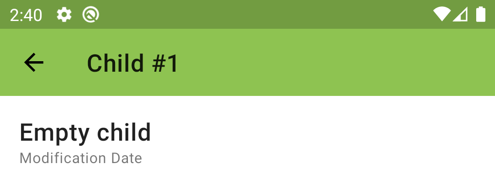
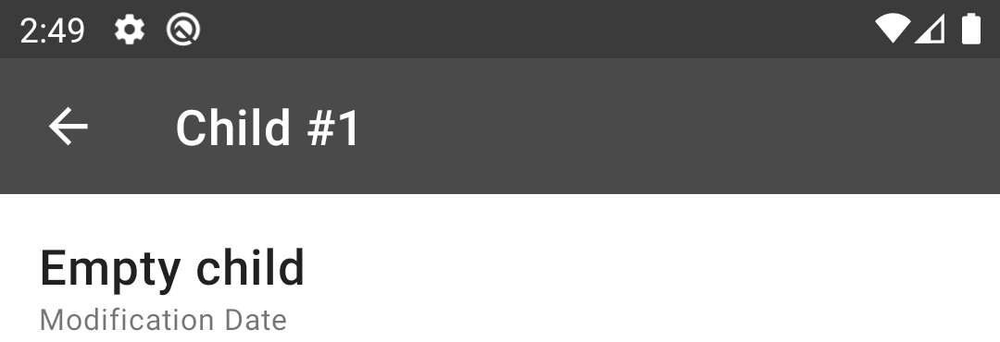
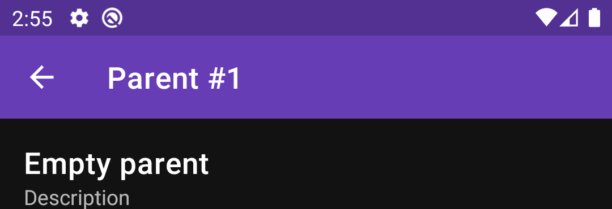
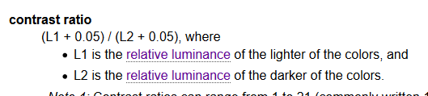
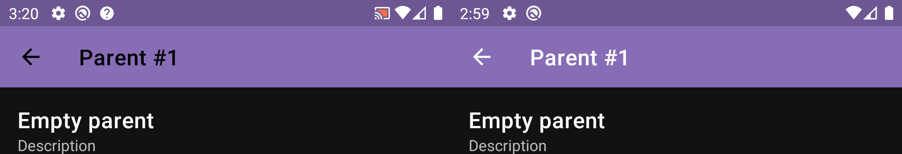
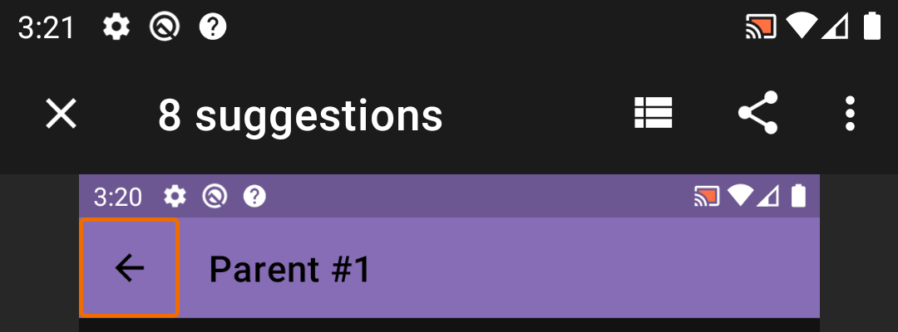

Introduction
One of the important parts of application development is to make it accessible to as many users as possible. This includes people with impaired vision, color blindness, impaired hearing, impaired dexterity, cognitive disabilities, and many other disabilities. Making an app accessible is challenging but rewarding. The difficulty is because the development team should pay attention to some details which often might be overlooked. Though besides some advanced accessibility support might be too expensive to add, there are still some basic best practices to ensure that your app development is heading in the right direction (and can be improved later over time). Basic accessibility support includes providing content descriptions, large enough touchable areas and ensuring good color contrast between foreground and background components. In this article, we’ll go in detail on the latest — color contrast. We’ll take a look at one specific situation I faced while developing FiberyUnofficial — my pet project, Android companion app for https://fibery.io.
Toolbar background
In Fibery (as in I guess any other similar tool) each entity has its color. The system generates one by default when a new entity type is created and then the user is free to change it. There is a screen on the web and in the app to see details of some particular entity (i.e. view all the fields). Of course, the best way to add “entity personality” to the entity details screen is to color it with the entity’s color. So, we’ll have a toolbar on top of the screen with the entity color background and text (with entity type name and id) on top. This is how it might look like:

NOTE: as Android theming doesn’t support dynamic creation, we’ll have to create everything manually. The good news is that for the toolbar we have all the needed methods to change the background and text colors dynamically. Also there is a way to add tint over images, so action icons in the toolbar can be tinted dynamically as well.
We change the toolbar color with:
toolbar.setBackgroundColor(bgColor)
This looks good, but it is just because the background color is light so black text looks good. If we have a dark background color then it won’t look nice:

Text color
To fix this we need to apply simple logic.
if (bgColor.isDark) {
toolbar.setTitleTextColor(Color.WHITE)
} else {
toolbar.setTitleTextColor(Color.BLACK)
}
The only thing left is to define how to understand whether bgColor is dark or light.
Alternative color models
The most common color model is RGB, I guess we all know it. It consists of three channels: one for red, second for green and third for blue. Changing values in channels result in a different color. But there are also other color models, among which there are HSL, HSV, etc. Here we’re interested in XYZ. Y parameter (which is luminance) is exactly the parameter we need to identify whether our color is dark or light. This value is defined in a range [0, 1], where 0 means the darkest color and 1 the lightest one. Luckily for us, we don’t need to do the color conversion ourselves, there is a handy utility method in the Android SDK already:
ColorUtils.calculateLuminance(bgColor)
It will return a float value between 0 and 1. The simplest logic of defining whether bgColor is dark or not is to compare with the middle value — 0.5:
fun isDarkColor(@ColorInt color: Int): Boolean {
return ColorUtils.calculateLuminance(color) < 0.5
}
NOTE: this is exactly what one can find on StackOverflow after searching for dark color checking.
And finally the result:

Dark theme support
What we have already looks good, but at the same time we still have an issue if we decide to add support for dark theming, check it out:

Our toolbar looks too bright. And it is because of saturation of the color is too high. If we decide to follow design guidelines for a dark theme we’ll see that we need to de-saturate our color to make it “softer” for eyes when dark mode is enabled. What it means that we need to convert our RGB color into HSL or HSV (translated as hue, saturation, value) and reduce the second parameter responsible for saturation. Then convert the color back to RGB and use it as the background of toolbar. This time we’ll do some manual work by creating a special method for de-saturation, which under the hood will convert our color to HSV (as there is ready method for that in the Android SDK):
@ColorInt
fun getDesaturatedColor(@ColorInt color: Int): Int {
val result = FloatArray(size = 3)
Color.colorToHSV(color, result)
result[1] *= *0.6
*return Color.HSVToColor(result)
}
We’ll multiply saturation by 0.6. It is just the experimentally taken value.
NOTE: probably an improvement to the approach could be to not only decrease ther saturation of all colors, but to also add some lower bound limit to not de-saturate already “de-saturated” colors that much
And here is the result (with comparison: original on the left and de-saturated on the right):

This looks better.
Color contrast
But still, there is an issue. But this time it might be quite surprising. In the Play Store, there is an app “Accessibility Scanner” developed by Google, which allows you to make some screenshot testing of your screen to meet accessibility guidelines. If we run this check on the screen:

We see that we have an issue: contrast between toolbar background and text on top of it is not sufficient! This refers to WCAG, which says that contrast between text and background should be at least 4.5:1. Numbers are a bit abstract, but a lot of investigations and math is behind that. There are formulas in the guidelines describing how to calculate these values:


But again, we don’t need to calculate them manually, as there is a ready to use method:
ColorUtils.calculateContrast(foreground, background)
Our background color which had an issue is: #7f6fad. If we calculate its luminance, we’ll get 0.1889803503770053 which means that this color should be considered as dark. Let’s calculate contrast between white and this color, and black and this color. The result will be:
- White: 4.393666669010922
- Black: 4.779607007540106
So, though our previously created method detects background color as dark, it turns out that black text would have better contrast than white! And contrast which white gives is not enough!
Let’s see the difference. It seems black is more readable.

Final touch
OK, so now we have a new idea on how to choose better color (white or black) — we’ll calculate contrasts between white and background color and black and background color and choose one with the highest value.
fun getContrastColor(@ColorInt color: Int): Int {
val whiteContrast = ColorUtils.calculateContrast(Color.WHITE, color)
val blackContrast = ColorUtils.calculateContrast(Color.BLACK, color)
return if (whiteContrast > blackContrast) Color.WHITE else Color.BLACK
}
One question which is left is whether it is possible for both white and black colors to not meet contrast requirements of 4.5:1? Let’s do some math. We’ll remember the formula from WSAG and check it. We’ll have three values of L (relative luminances):
-
Lw — relative luminance for white, which is 1
-
Lb — relative luminance of black, which is 0
-
Lt — which we’ll be our target color’s luminance.
The contrast is calculated by the formula:(L1 + 0.05) / (L2 + 0.05) (where L1 > L2). So we’ll have two equations, and we’d like to check whether they both can hold. First will be for white (L1 will be substituted with Lw, L2 with Lt), second for black (L1 will be Lt, L2 will be Lb):
1.05 / (Lt + 0.05) < 4.5
(Lt + 0.05) / 0.05 < 4.5
After a few manipulations we’ll get this:
Lt > 0.18(3)
Lt < 0.175
And both these equations can’t be true at the same time, therefore either black or white text will have good contrast over any background color!
So, finally, after adjustments Accessibility Scanner says that issue is resolved:

Though there are still other issues which need to be fixed :)
Conclusion
Accessibility is difficult. Working with colors is also difficult. But it should not scare you.
Following best practices, guidelines and using tools such as “Accessibility Scanner” allows you to make your app more accessible with ease. Don’t wait to make your app more accessible, review it with a tool and make needed changes.
Additionally, I would like to point out how important it is to craft good requirements. “If the background color is dark then display white text, otherwise use black” is an example of bad requirements. It doesn’t describe what actually “dark” means and it doesn’t say why we want to display exactly white over dark. “Text should be readable and meet accessibility requirements” is better, because it shows intention and clearer describes the problem we’d like to solve. Mentioning accessibility requirements, after all, will guide you to official guidelines and it will make the right decision to not create your implementation of “dart vs. light” based on some experimental thresholds, but instead follow best practices.
Happy coding!